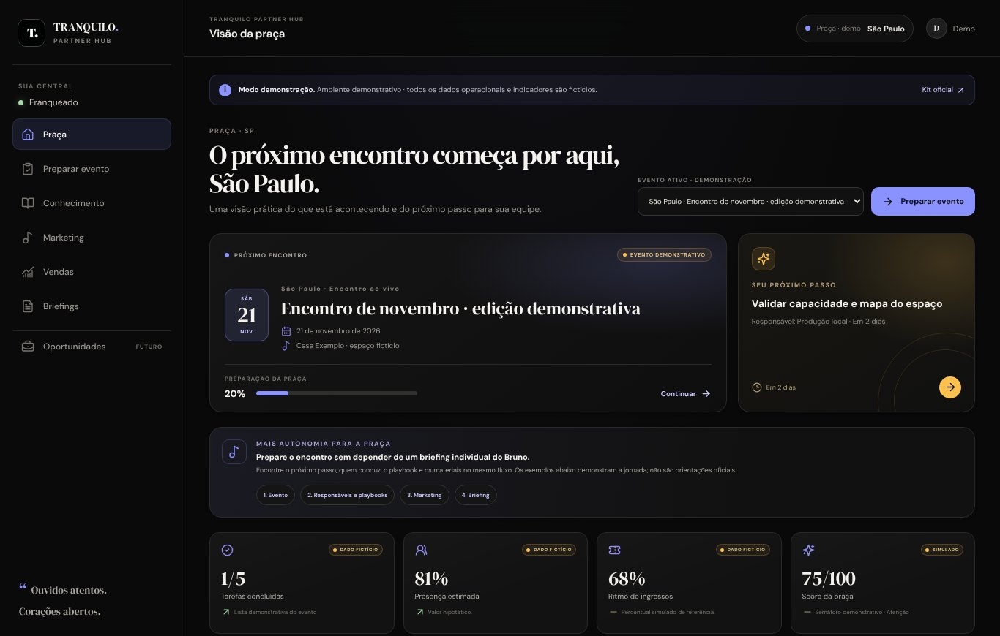

A máquina dos 80 eventos
Plano de implementação para os próximos dois meses: processos funcionando, área do franqueado no ar e o time desafogado.
“Ouvidos atentos. Corações abertos.
franqueadoFrente 1
BrunoFrente 2
o restoFrente 3
Fazer os processos existirem e rodarem sozinhos, para um time curtíssimo entregar de 50 a 80 eventos sem crescer.A partir do seu áudio
Implementar a máquina
Área do franqueado funcionando, envios do Bruno automatizados e tudo o que der para automatizar. Menos análise, mais coisa rodando.
De 80 para 160
Olhar os números, a curadoria e a estratégia de crescimento. Só depois que a máquina provar que funciona.
O mesmo time,
mais eventos
Em 8 semanas, mostrar com números que o time atual aguenta a escala de 50 a 80 eventos, porque o trabalho manual saiu do caminho.
Na semana 1 eu meço o ponto de partida. Sem isso, não dá para provar nada no fim.
Três frentes, nessa ordem
Área do franqueado no ar
O método, as tarefas, os playbooks e os materiais num lugar só, com o conteúdo real do Notion. O franqueado prepara o evento sem pedir tudo por mensagem.
Protótipo já prontoEnvios do Bruno no automático
Os relatórios e briefings que hoje ele monta um a um saem sozinhos, a partir dos dados do evento. O Bruno revisa as exceções, não refaz tudo.
Mapear na semana 1Automatizar o resto que der
Uma fila de rotinas manuais, atacada pela ordem de horas economizadas, aproveitando as ferramentas que vocês já pagam.
Fila por retorno
Ela já tem cara. Agora precisa de dado real
O protótipo mostra a jornada: evento → responsáveis → playbooks → marketing → briefing. Hoje roda com dados fictícios.
- Puxar playbooks e checklists do Notion
- Acesso separado por praça
- Tarefas e prazos reais de cada evento
- Piloto com uma praça antes de abrir para todas
Tirar o Bruno do papel de despachante
Sento com o Bruno para listar cada envio: o que é, para quem, de onde vêm os dados e quanto tempo toma. O desenho final sai desse mapa.
Uma fila, atacada pelo que mais devolve tempo
Ordem a confirmar na semana 1, pelas horas que cada rotina toma hoje. Estado atual segundo o briefing de Inteligência & Dados. Prioridade é reaproveitar Notion, Zapier, NextTags e o que já existe.
Oito semanas, com coisa nova rodando toda semana
Processos, horas e envios mapeados. Ponto de partida medido.
Área do franqueado com conteúdo real numa praça piloto.
Primeiros envios do Bruno saindo sozinhos.
Resultado contra o ponto de partida e decisão sobre a fase seguinte.
Mão na massa, perto do time
Entrega toda semana
Uma coisa nova funcionando por semana, mostrada para quem vai usar. Nada de relatório para a gaveta.
Junto do Bruno e de Dados
Aproveito o que a frente de Inteligência & Dados já construiu e trabalho direto com quem sente a dor.
Reaproveitar primeiro
Notion como fonte, automações nas ferramentas que vocês já pagam. Construir só o que não existe.
Previsão de público por artista e cidade, curadoria como produto, matching de agenda e a estratégia de 80 para 160 eventos. Tudo isso fica melhor com a máquina rodando e dado real acumulado.
O que eu preciso para a semana 1
Notion, planilhas e ferramentas, para ler como tudo funciona hoje.
Uma conversa para mapear todos os envios que ele faz.
Uma praça e um franqueado para testar a área primeiro.
Combinarmos dedicação e acompanhamento entre nós.